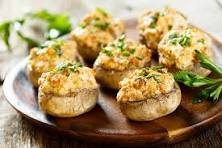

Ingredients
- 12 large mushrooms
- 1 cup cream cheese
- 1/2 cup grated Parmesan cheese
- 2 cloves garlic, minced
- 2 tablespoons chopped fresh parsley
- Salt and pepper to taste
- 1 tablespoon olive oil
Instructions
- Preheat oven to 375°F (190°C).
- Clean mushrooms and remove stems. Chop stems finely.
- In a pan, heat olive oil and sauté garlic and chopped mushroom stems until tender.
- In a bowl, mix cream cheese, Parmesan cheese, sautéed garlic and stems, parsley, salt, and pepper.
- Stuff the mushroom caps with the mixture and place on a baking sheet.
- Bake for 15-20 minutes, until mushrooms are tender and tops are golden brown.
- Serve warm.
Nutritional Information
Calories: 70 per serving
Protein: 3g
Carbohydrates: 3g
Fat: 5g